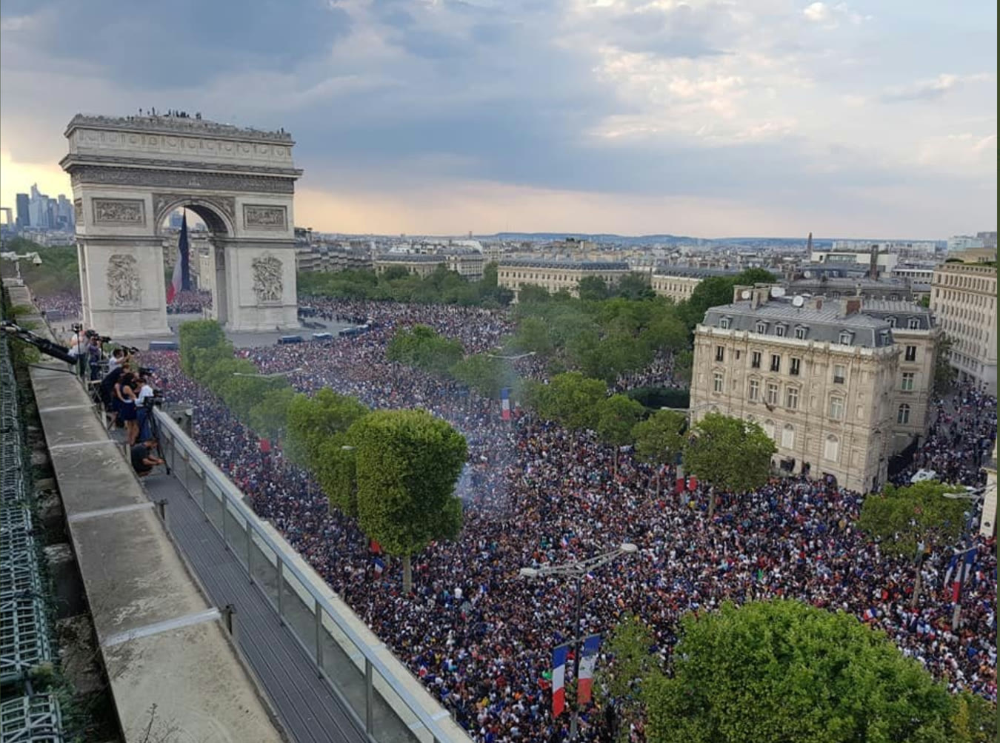
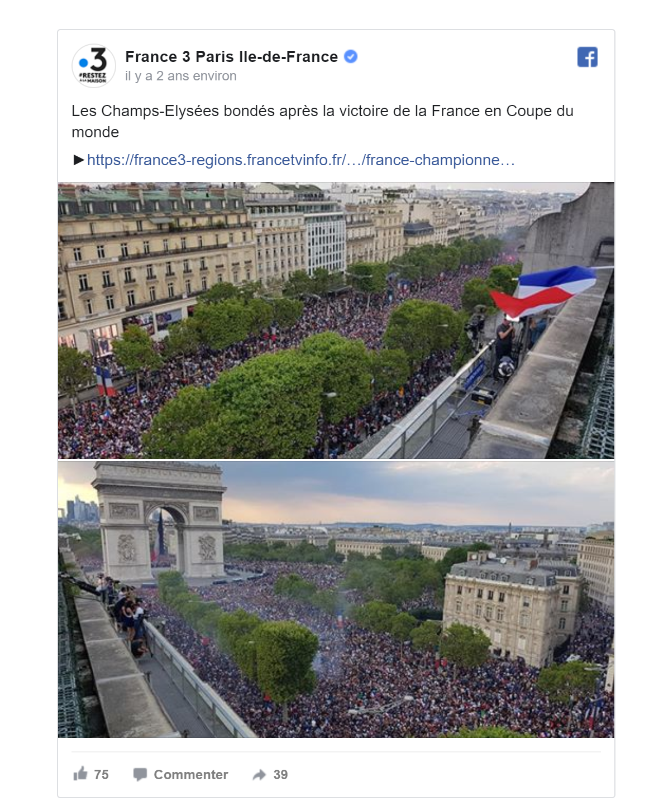

↺
twitter.com/Tikitoq
Miranda Veracruz De La Hoya Cardinal
@Tikitoq
Sérieusement ?!

11:22 PM · 15 mars 2020 · Twitter Web App
Ouvrir l'image dans un nouvel onglet
Enregistrer l'image sous…
Copier l'image
Copier l'adresse de l'image
Inspecter
Enregistrer sous
Accès rapide
🖥️ Bureau
📄 Documents
⬇️ Téléchargements
🖼️ Images
Bureau
Nom du fichier :
Enregistrer
Annuler
images.google.fr
G
o
o
g
l
e
images
Faites glisser une image ici ou
importez un fichier
photo foule.jpg
Correspondances visuelles
France 3 Paris Île-de-France
La France championne du monde : Paris en délire !
15 juillet 2018
Twitter
salut (@YOLOAVANTOUT)
Nordpresse
Confinement - Grand rassemblement de…
Ouvrir · Bureau
photo foule.jpg
facebook.com/france3paris

Bureau
photo foule.jpg